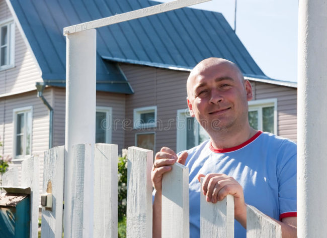
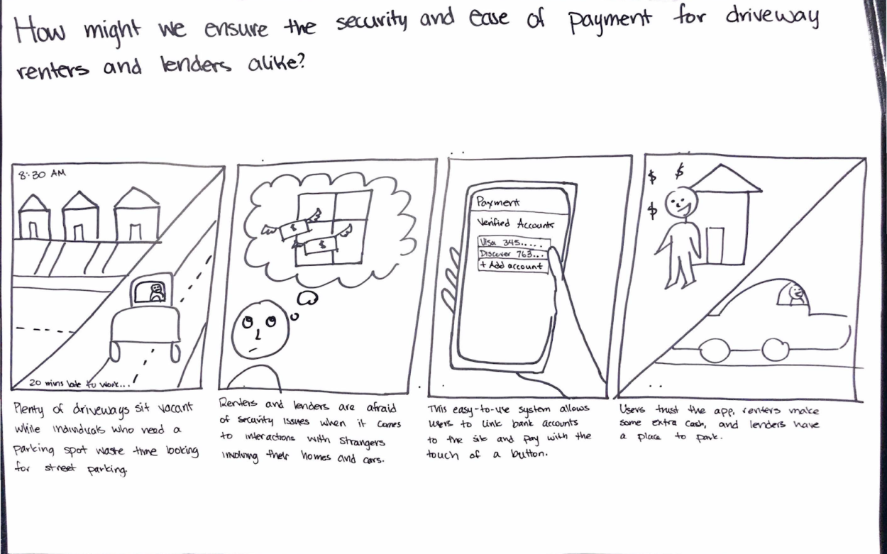
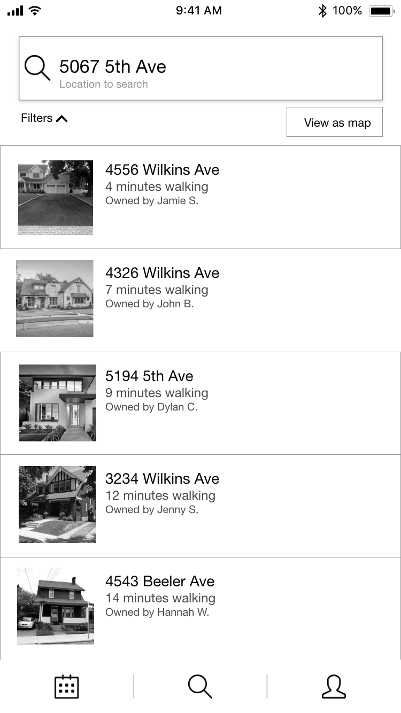
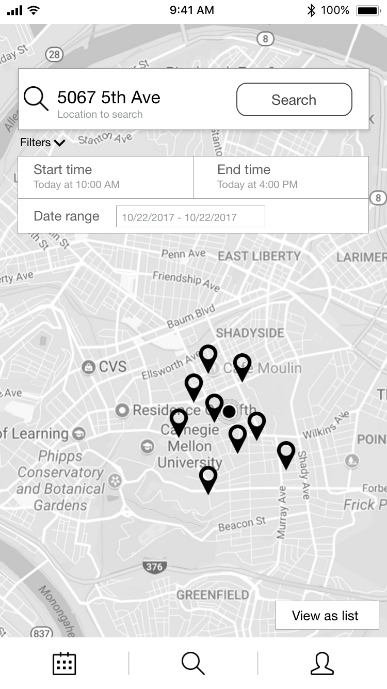
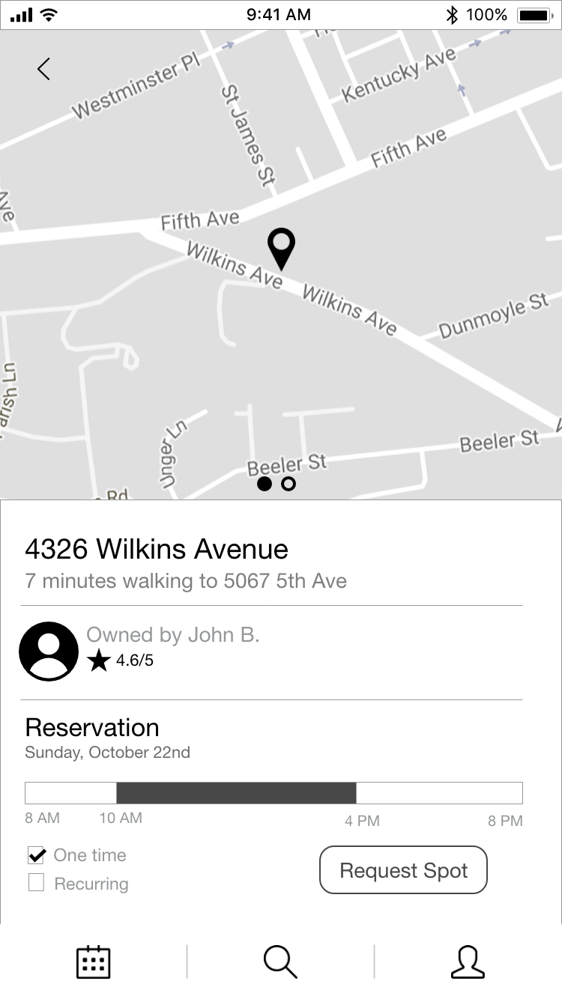
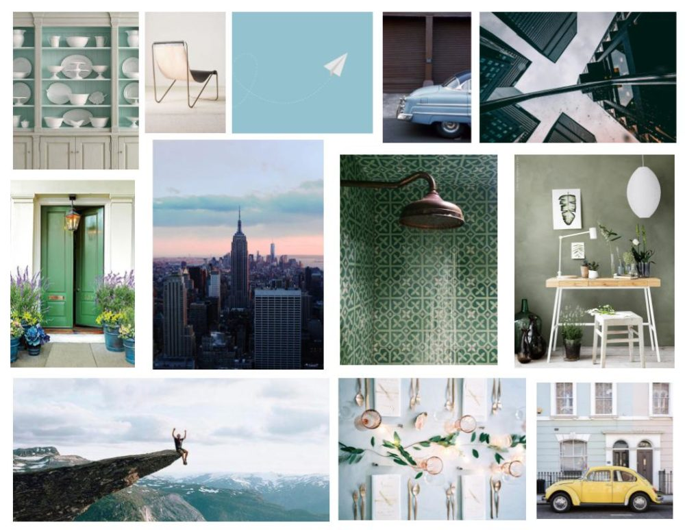

Context
This is a parking space sharing app that I worked on in Interaction Design Overview (IxDO), a core class of the HCI minor. IxDO is a studio course that offers a broad overview of communication and interaction design, through which students learn design methodologies such as brainstorming, sketching, storyboarding, wire framing, and prototyping.
We were handed off research and tasked with translating those insights into a mobile prototype. From the research, we found that homeowners and landlords want to securely utilize their vacant parking spaces, and students, commuters, and tourists want a convenient way to find affordable parking spaces near their schools or workplaces.
The solution our group implemented created value in the following areas:
Security – Instills a sense of safety in users of the system through review system.
Flexibility – Ease of use for both one-time and recurring users.
Simplicity – Clear, user-friendly interface.
Team
I worked in an interdisciplinary team of four.
Personas, Scenarios, Storyboarding, Wireraming, Prototyping, Presenting
Adobe XD, Adobe Photoshop, Google Slides
Personas
Given existing research (including customer journey maps, ecosystem collection, 'how might we' statements, interviews) our team created a few potential users of the platform.
David is a father of two, aged 3 and 5, and has lived in his house for 6 years in a peaceful neighborhood. He doesn’t mind the idea of lending out his driveway to help others’ parking issues, but he has a lot of concerns. What if the renter disturbs the neighbors? What if the renter drives across his lawn and destroys it? How would the transactions be secured? How would the safety of the household be ensured? He’s not sure if it’s worthwhile to risk all of these problems for just a small amount of money.
Jenny is a senior at Carnegie Mellon who lives on Beeler Street, directly adjacent to campus, and has one available parking spot that neither she nor her two other housemates use. Jenny would benefit from some extra spending money, and is used to her friends asking if they can park at her house. She does not mind sharing the space with friends, but she does not know how to connect with other people looking to find parking. She would rent out her space if she could quickly and easily find trustworthy people to rent her parking spot to.

Chris is in his late 50s and is a tourist visiting Pittsburgh for the first time. Chris has a car and wants to drive around Pittsburgh to visit popular tourist destinations such as Benedum Center and the Cathedral of Learning. He wants to optimize his time sightseeing in Pittsburgh and doesn’t mind paying extra money to find parking spaces near the tourist destinations if it means he is guaranteed a space for that period of time. He is not tech savvy and isn’t familiar with using peer economy applications like Uber or Airbnb.
Charlotte is an employee at Duolingo in East Liberty and drives her car to work every day. She doesn’t have a parking permit and Duolingo doesn’t have employee parking. Whenever she drives to work, she usually circles the surrounding blocks until a space opens up. Duolingo isn’t strict about work hours, but Charlotte prefers to work from 9-5 so she has time to exercise at the gym after work. Charlotte is also a relatively tech-savvy person, an early tech adopter, and often uses websites such as Uber, Lyft, Airbnb that employ peer economies.
Scenarios
David wants to ensure the harmony of his household as well as the neighborhood. He cares about his wife and his kids’ safety, and doesn’t want to disrupt the neighbors and ruin the good relationships with them. Our website would provide a platform where security is prioritized, with possible third-party monitor or rating / report systems that ensures a safe network for people.
Jenny has an unused parking spot in front of her house and would like to be able to utilize it to make money. Right now, Jenny lets her friends park there sometimes, but otherwise it sits there vacant 80% of the time and she doesn’t really know how to advertise that she would like to rent her spot out. Our website will give Jenny an easy-to-use platform with which to make money by matching her with individuals who need the service her parking spot provides.
Chris wants to reliably and quickly find a parking spot while he visits Pittsburgh. He does not want to deal with the stress and waste time searching for a parking spot, but is not particularly tech savvy. Our website will provide an intuitive, clear interface that Chris can use seamlessly to find parking spots in minutes.
As an employee who drives to work everyday in East Liberty, Charlotte wants a consistent place to park her car every day. Because she doesn’t have a parking permit and there is no employee parking, it is often difficult for her to find space near her office, so she usually circles the surrounding blocks until a space opens up, which often frustrates her and makes her anxious about being late to work. Our website allows Charlotte to sign up and rent a space near her office to consistently park on the weekdays so that she is guaranteed to have a space to prevent her from wasting time looking for spaces and stressing about being late for work.
Storyboard
Based on several “how might we” statements, the team created several storyboards depicting potential early features of the platform. The storyboard below illustrates a scenario in which both renters and lenders are satisfied by the security and ease of use of the app.

"Plenty of driveways sit vacant while individuals who need a parking spot waste time looking for street parking"
"Renters and lenders are afraid of security issues when it comes to interactions with strangers involving their homes and cars."
"This easy-to-use system allows users to to link bank accounts to the site and pay with the touch of a button"
"Users trust the app, renters make some extra cash, and lenders have a place to park"
Wireframes
Building upon our wireframes, we iterated on our screen designs and added photos to bring the screens to life and look more similar to a web application. We rounded the edges of the tabs and buttons, and we organized the text on the screen to be more legible. To allow for easier and clearer navigation between pages, we added a navigation bar at the bottom of each screen to navigate between the user’s profile, reservations, calendar, and transactions.



Mood Board and Style Guide
After creating greyscale prototypes, the team put together a mood board to capture the feelings we wanted to elicit from the user. We wanted to achieve a calm, secure, and orderly theme. The style guide takes elements of the mood board to provide a cohesive style throughout the app.


MILES
NEWSTAGRAM